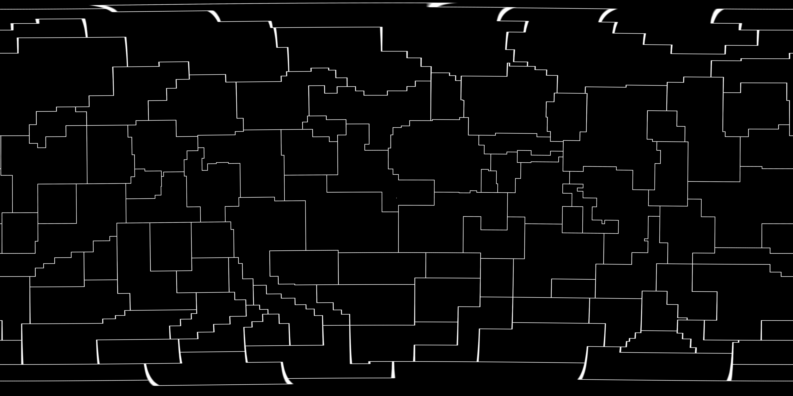

stars & knots!
lamp!


Following last week's assignment , I continued with making a planetarium-inspired lamp. I learned a lot of things about Rhino & printing more complex geometries in the process, and the final artifact kind of feels less than the sum of it's parts; but I definitely had a lot of fun working through this project. My lamp-making moved through a couple design iterations:
iteration 1: PLA logging
At first, I planned to make a sphere with the constellation figures simply cut out of it; after spending some time modelling, I thought it would be much more visually interesting to inverse this idea and have the constellations 'filled in'. To keep all the constellations connected, I could use the constellation boundaries; I've always appreciated the delicate branching structures based on natural simulation (such as nervoussystem's work), and the constellation boundaries have a similar feel. This would, of course, result in geometry with many overhangs, thin structures, etc... Having never printed anything that required too much support structuring yet, I thought it would be worth trying to print.

Getting the constellations into Rhino was a bit of an unanticipated ordeal; I learned to export from Inkscape as an optimized svg, otherwise Rhino wouldn't be able to follow the lines exactly. To get printable extrusions, I gaussian blurred & thresholded the original images a few times. After rebuilding curves to fix self intersections, I was just a FlowAlongSrf and a Split away from an stl. I also wanted to get crisp shadows for my lamp, so bulb choice was important; a high intensity bulb - closer to a point-source of light - would cast better shadows. I couldn't find many good reccomendations on the internet. In the end I got a T10 tubular filament LED bulb based on some reviews I read. Unfortunately, they don't cast a very good shadow :( but, they are a kind of intersting shape. I changed my design to be cylindrical rather than spherical.
I sliced it up with tree supports, and since it was going to take ~12 hours to print, I ran it overnight to see what it looked like in the morning. I ended up with an alright looking print (the poor infill was due to slicer settings I'd been changing previously and were resolved by restoring defaults), but the tree supports were not fun to take off. I was delicate with it for a while, but eventually the thin structures snapped.
I didn't have much time to work on it the next day anyways, so I tried splitting the cylinder in half and printing again, wondering if it'd be easier to take the support structures of just one half. It didn't work much better. On to iteration 2!
iteration 2: dodecahedron't even think about it
Iteration 2 was a bit of a false start. Working from the idea to print 2 half cylinders, I had the idea to flow the constellations around a dodecahedron and then print each face individually. Then I could clip each face together, following my plans for a polyhedra construction kit from assignment 3. I made a dodecahedron from 12 pentagons, but couldn't treat the resulting object as a single surface to 'flow' along. I also tried using the pull and project commands to map the constellations from a sphere to the dodecahedron, but the results were all pretty messy. And since pentagons don't tile a plane, there wasn't a great way to map things manually either.So, iteration 2 didn't make it to the printer bed.
iteration 3: fine, i'll print a box
For round three, I decided to divide my original images into 4 faces to print as flat rectangles, and assemble them into a rectangular lantern around my bulb. I decided on a press-fit base so that I could print new 'lamp-shades' and swap them out if & when I wanted to.I wanted a hanging pendant lamp, so to stabilize the base I made a structure to hang over the bulb. The hole is large enough to slip over the plug; the fingers that come out reach the small screw that is present on the above the bulb socket to keep the lamp in place. The fingers are filleted extrusions 0.6mm in height; I quickly printed sections of varying heights to see the tradeoff between thickness & flex.
The final lamp looks alright I think! Among other things, I should have: made the press fit a tighter fit and/or added more material to 'press' into in the base; waited for the sides to come off more easily from the bed, because pulling them up flex them out of shape; maybe added some support around the bottom to keep thge bottoms square. As mentioned above, the bulb doesn't cast a good shadow, but my phone lightbulb does!
mold!
I was trying out grasshopper's python functionality, and thought some mathematical shapes would be fun to generate with it. I made a simple generator for Lissajous knots, using the equations $$x = cos(n_xt + \phi_x), \quad y = cos(n_yt + \phi_y), \quad z = cos(n_zt + \phi_z)$$ where \(n_x, n_y, n_z\) need to be relatively prime for the knot to not self-intersect, and any one of the phase shifts can be assumed to be 0. The generator is controlled from grasshopper:For my mold, I thought I'd try a treifold knot.